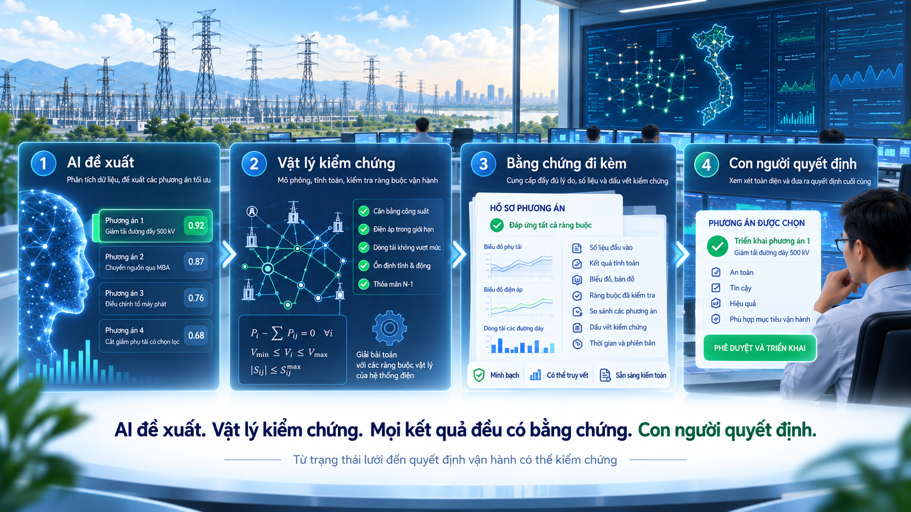

1. Khi AI đi từ “nói” sang “làm”
Trong giai đoạn đầu của học máy ứng dụng, phần lớn mô hình thường dừng ở một nhiệm vụ dự đoán: dự báo phụ tải, phân loại ảnh, phát hiện bất thường hoặc xếp hạng một tập phương án. Khi kết quả chưa đạt yêu cầu, cách xử lý quen thuộc là điều chỉnh mô hình, huấn luyện lại hoặc chấp nhận một mức sai số nhất định.
Nhưng khi AI đi vào vận hành hạ tầng trọng yếu, đặc biệt là lưới điện, câu chuyện thay đổi hoàn toàn. Một khuyến nghị không còn chỉ nằm trên màn hình. Nó có thể trở thành đầu vào cho quyết định đóng cắt, chuyển tải, thay đổi topology, điều chỉnh điểm đặt hoặc chuẩn bị một trình tự thao tác.
Một mô hình thật lớn không nên được đặt vào giữa hệ thống rồi kỳ vọng nó tự hiểu vật lý, tự hiểu quy trình vận hành và tự biết giới hạn thẩm quyền. Với hệ thống trọng yếu, kiến trúc kiểm soát quan trọng hơn một bản trình diễn đẹp.

2. Độ chính xác của mô hình chưa đủ để tạo niềm tin vận hành
Trong học máy, mô hình thường được đánh giá bằng accuracy, precision, recall, F1, hiệu chuẩn xác suất hoặc các chỉ số phù hợp với từng bài toán. Những chỉ số đó vẫn cần, nhưng đối với vận hành lưới điện, chúng chỉ mô tả một phần của vấn đề.
Giả sử một mô hình có thể xếp đúng phương án tốt nhất trong 98% số snapshot của tập kiểm thử. Khi đó, 2% còn lại mới là phần cần được xem xét kỹ. Chúng xuất hiện khi lưới bị tách đảo, ở một cấu hình hiếm gặp, sau một lịch cắt điện kế hoạch, khi dữ liệu đo chưa đồng nhất, hay khi phương án giảm quá tải trên một nhánh nhưng lại tạo vi phạm mới ở nơi khác?
Niềm tin trong vận hành không đến từ một con số trung bình. Nó đến từ khả năng kiểm chứng một quyết định cụ thể trên đúng trạng thái cụ thể của hệ thống.
Chỉ số của mô hình trả lời
Mô hình thường đúng đến mức nào trên tập dữ liệu đã biết?
Bằng chứng vận hành trả lời
Phương án này có thực sự chấp nhận được trên đúng trạng thái lưới đang xét hay không?
3. AI nên đứng ở đâu trong chuỗi quyết định?
AI có ba điểm mạnh đặc biệt phù hợp với vận hành lưới điện: tìm kiếm trên một không gian phương án lớn, xếp hạng phương án và ghép nối ngữ cảnh. Đây chính là những việc con người khó thực hiện đủ nhanh khi số lượng sự cố giả định, cấu hình topology và trạng thái vận hành tăng mạnh.
Nhưng AI không cần giành luôn vai trò của bộ giải, logic bảo vệ hay điều độ viên. Phân công đúng vai trò sẽ làm hệ thống vừa mạnh hơn vừa dễ kiểm soát hơn.
| Thành phần | Vai trò phù hợp trong kiến trúc |
|---|---|
| AI / ML | Tìm kiếm, truy hồi, sinh phương án ứng viên, xếp hạng top-k, ước lượng rủi ro và tóm tắt bối cảnh. |
| Lớp tính toán vật lý | Tính load flow, kiểm tra giới hạn, sự cố giả định, topology và các trạng thái trung gian. |
| Quy tắc vận hành | Ràng buộc thẩm quyền, thiết bị, trình tự, liên động, quy trình và chính sách vận hành. |
| Điều độ viên | Đánh giá bối cảnh, sửa phương án, chấp nhận hoặc từ chối hành động. |
4. Vật lý phải là lớp kiểm chứng độc lập
Trong lưới điện có một lợi thế mà nhiều bài toán AI khác không có: hệ thống bị chi phối bởi các định luật vật lý rất rõ. Định luật Kirchhoff không thay đổi chỉ vì mô hình vừa được tinh chỉnh. Tổng trở của lưới cũng không thay đổi vì AI trả lời tự tin hơn. Một cấu hình topology sai vẫn tạo ra đúng hệ quả vật lý của nó.
Vì vậy, kiến trúc nên tách rõ hai lớp: AI đề xuất và vật lý kiểm chứng. AI có thể học rất tốt từ lịch sử, từ thao tác của điều độ viên, từ PTDF/LODF, từ cấu trúc đồ thị hoặc từ hàng trăm nghìn snapshot. Nhưng trước khi một phương án được coi là khả thi, nó phải đi qua bộ giải và các bước kiểm tra ràng buộc.
Cách phân vai này rất thực dụng. AI được dùng đúng chỗ mà nó mạnh, còn bộ giải vật lý giữ vai trò kiểm chứng độc lập trước khi phương án đi xa hơn trong quy trình vận hành.
5. Từ lấy mô hình làm trung tâm đến lấy tình huống vận hành làm trung tâm
Một nền tảng vận hành không nên được tổ chức xoay quanh từng mô hình AI riêng lẻ: một mô hình dự báo, một mô hình phát hiện bất thường, một mô hình xếp hạng phương án, rồi thêm một trợ lý AI. Điều độ viên không quan tâm phía sau có bao nhiêu mô hình đang chạy. Điều họ cần là hiểu đầy đủ một tình huống lưới đang xảy ra hoặc sắp xảy ra.
Một tình huống vận hành đầy đủ phải gom được ít nhất bốn lớp thông tin: trạng thái hiện tại, trạng thái dự kiến, các ràng buộc đang có hiệu lực và những hành động khả thi. AI sau đó làm việc trên cùng một ngữ cảnh đó, thay vì mỗi mô hình nhìn vào một mảnh dữ liệu riêng.
Khi kiến trúc chuyển từ lấy mô hình làm trung tâm sang lấy tình huống vận hành làm trung tâm, khả năng giải thích cũng trở nên tự nhiên hơn. Điều độ viên không cần một bài giảng về cấu trúc của mạng nơ-ron. Điều họ cần biết là phương án này giảm tải nhánh nào, còn bao nhiêu biên an toàn, có tạo vi phạm mới hay không, và kết quả được tính trên snapshot nào.
6. AI tác tử: có thể điều phối công cụ, nhưng không đồng nghĩa với quyền quyết định
AI tác tử, hay Agentic AI, làm cho bài toán này thú vị hơn vì AI không chỉ trả lời câu hỏi. Một tác tử có thể chọn công cụ, truy vấn dữ liệu, gọi bộ giải, so sánh phương án, tạo báo cáo và chuẩn bị quy trình để người vận hành xem xét.
Khả năng điều phối công cụ là một năng lực rất có giá trị. Tuy nhiên, gọi được đúng công cụ không có nghĩa là hệ thống được trao quyền quyết định. Hai việc này phải được tách biệt ngay từ kiến trúc.
Được phép làm gì
Truy vấn trạng thái, chạy mô phỏng, tạo phương án ứng viên, so sánh kết quả và chuẩn bị bản nháp.
Bị ràng buộc bởi
Danh sách công cụ được phép dùng, phân quyền theo vai trò, kiểm tra trạng thái, chính sách vận hành, giới hạn thời gian và bước phê duyệt.
Không tự quyết
Không tự biến một khuyến nghị thành thao tác hiện trường khi chưa có đủ quyền hạn và kết quả kiểm chứng tương ứng.
7. Mỗi đề xuất phải đi kèm bằng chứng có thể kiểm tra lại
Một khuyến nghị tốt trong hệ thống trọng yếu không nên chỉ có một điểm số. Nó phải đi kèm đủ bằng chứng để một kỹ sư khác có thể đọc lại, kiểm tra lại và tái lập đúng tình huống đã dẫn tới khuyến nghị đó.
Nguồn gốc trạng thái
Snapshot nào, thời điểm nào, phiên bản topology nào và tập dữ liệu nào đã được sử dụng.
Nguồn gốc mô hình
Mô hình và phiên bản nào đã sinh hoặc xếp hạng phương án, độ tin cậy là bao nhiêu và điều kiện áp dụng là gì.
Kết quả tính toán vật lý
Load flow, vi phạm, biên an toàn và kết quả các sự cố giả định trước và sau thao tác.
Kiểm chứng trình tự
Nếu có thao tác nhiều bước, các trạng thái trung gian phải được lưu lại và kiểm chứng.
Quyết định của con người
Ai đã sửa gì, ai từ chối, ai phê duyệt, lý do là gì và vào thời điểm nào.
Khả năng tái lập
Có thể dựng lại đúng tình huống để kiểm tra, kiểm toán hoặc phân tích sau sự kiện.
Đây cũng là điểm còn thiếu trong nhiều bản trình diễn AI. Hệ thống có thể trả lời rất trôi chảy, nhưng nếu không để lại đủ dấu vết thì câu trả lời vẫn chưa thể trở thành một phần đáng tin cậy của quy trình kỹ thuật.
8. Bản sao số vận hành là lớp nền để AI bám vào thực tại
Để AI hiểu cùng một trạng thái mà điều độ viên đang nhìn thấy, trước hết phải có một biểu diễn thống nhất của lưới. Lớp này có thể được tổ chức dưới dạng Bản sao số vận hành, Operational Digital Twin. Đây không phải một mô hình 3D đẹp mắt, mà là một trạng thái số có topology, ngữ nghĩa điện lực, số đo, giới hạn vận hành và khả năng tính toán được.
Khi mỗi snapshot có thể được tải lại, chạy load flow lại, mô phỏng lại các sự cố giả định và so sánh với kết quả lịch sử, nền tảng đó có thể phục vụ đồng thời cho phát triển AI và kiểm chứng AI.
Bản sao số vận hành vì vậy không phải một phần phụ thêm cho AI. Nó là lớp nền để mọi phân tích, đề xuất và quyết định của AI luôn gắn với một trạng thái lưới cụ thể và có thể kiểm chứng lại bằng tính toán.
9. Một kiến trúc phù hợp cho vận hành thực tế
Nếu xây một nền tảng AI hỗ trợ vận hành lưới từ đầu, điểm khởi đầu không nên là câu hỏi chọn LLM nào. Trước hết cần xác định chuỗi ra quyết định, trạng thái tham chiếu đáng tin cậy, lớp tính toán, vai trò của AI và ranh giới phê duyệt.
Một số nguyên tắc nên được giữ như ràng buộc cứng
- Không để AI trở thành nơi xác nhận tính đúng vật lý. Trạng thái lưới được quản trị và kết quả tính toán có thể kiểm chứng mới là căn cứ.
- Không dùng điểm tin cậy của mô hình thay cho kiểm chứng. Mức tự tin của mô hình và tính khả thi điện lực là hai chuyện khác nhau.
- Không chỉ kiểm tra trạng thái cuối. Với một chuỗi đóng cắt, các trạng thái trung gian cũng phải an toàn.
- Không che giấu bất định. Khi chất lượng dữ liệu kém, mô hình gặp trạng thái ngoài phân phối hoặc bộ giải không hội tụ, hệ thống phải nói rõ.
- Không để tác tử AI vượt quyền. Công cụ được phép dùng, phạm vi hành động và bước phê duyệt phải đi theo đúng vai trò vận hành.
- Luôn có khả năng tái lập. Một khuyến nghị quan trọng phải có thể dựng lại sau đó từ đúng dữ liệu, phiên bản mô hình và kết quả tính toán đã sử dụng.
- Luôn có phương án khi AI không sẵn sàng. AI có thể tạm ngừng, nhưng năng lực vận hành cơ bản của hệ thống vẫn phải tiếp tục.
Mục tiêu không nên là biến AI thành một “điều độ viên ảo” biết mọi thứ. Vai trò phù hợp hơn là trở thành một lớp hỗ trợ thông minh, giúp con người xử lý một không gian trạng thái lớn hơn, nhanh hơn và có căn cứ hơn.
10. Giá trị vận hành thực sự nằm ở đâu?
Giá trị của cách tiếp cận này không nằm ở việc tự động hóa quyết định bằng mọi giá. Giá trị nằm ở khả năng giúp người vận hành nhìn thấy sớm hơn một trạng thái có thể xảy ra, khảo sát nhiều phương án hơn trong thời gian ngắn hơn, kiểm chứng từng phương án trên cùng một mô hình lưới và giữ lại đầy đủ căn cứ trước khi quyết định được đưa ra.
Nói cách khác, AI không làm giảm vai trò của điều độ viên. AI làm tăng chất lượng ngữ cảnh, tăng độ bao phủ của phân tích và rút ngắn thời gian đi từ nhận biết vấn đề đến lựa chọn phương án có thể thực thi.
Đây cũng là điểm phân biệt giữa một bản trình diễn AI và một nền tảng có giá trị vận hành thực sự. Bản trình diễn thường dừng ở câu trả lời. Nền tảng vận hành phải đi hết chuỗi từ trạng thái, tính toán, khuyến nghị, kiểm chứng, bằng chứng đến quyết định.
11. Kết luận
Trong vận hành lưới điện, điều khó không phải là làm một mô hình biết đề xuất phương án. Điều khó là đưa đề xuất đó vào một quy trình mà ở đó trạng thái lưới được xác định rõ, tính khả thi được kiểm chứng, bằng chứng được lưu lại và thẩm quyền quyết định không bị nhập nhằng.
AI cần được dùng để giảm không gian tìm kiếm, học từ lịch sử, nhận ra mẫu hình, kết nối công cụ và đưa đúng thông tin đến đúng người. Đồng thời, các phép tính vật lý phải giữ hệ thống bám vào thực tại, bằng chứng phải đủ để mỗi quyết định có thể được kiểm tra lại, và điều độ viên phải giữ quyền quyết định cuối cùng.
Nguyên tắc cốt lõi có thể tóm gọn như sau:
AI đề xuất. Vật lý kiểm chứng. Mọi kết quả đều có bằng chứng. Con người quyết định.
Đó là cách AI nên bước vào phòng điều độ.